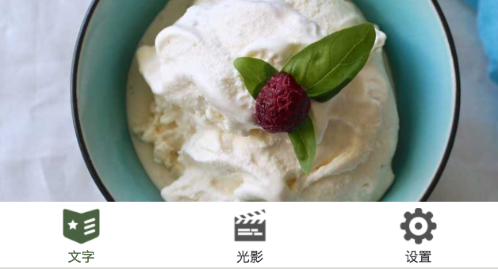

<!DOCTYPE html>
<html lang="en-US">
  <head>
    <meta charset="utf-8">
    <meta name="viewport" content="width=device-width,initial-scale=1">
    <title>第十章 完善文章页面 | Lin Books</title>
    <meta name="description" content="This is Lin books">
    <link rel="icon" href="/logo.png">
  <link rel="manifest" href="/manifest.json">
  <meta name="theme-color" content="#3eaf7c">
  <meta name="apple-mobile-web-app-capable" content="yes">
  <meta name="apple-mobile-web-app-status-bar-style" content="black">
  <link rel="apple-touch-icon" href="/icons/apple-touch-icon-152x152.png">
  <link rel="mask-icon" href="/icons/safari-pinned-tab.svg" color="#3eaf7c">
  <meta name="msapplication-TileImage" content="/icons/msapplication-icon-144x144.png">
  <meta name="msapplication-TileColor" content="#000000">
    
    <link rel="preload" href="/assets/css/0.styles.bf0c4e8a.css" as="style"><link rel="preload" href="/assets/js/app.65ff0979.js" as="script"><link rel="preload" href="/assets/js/2.e4f9a30a.js" as="script"><link rel="preload" href="/assets/js/11.5d958c10.js" as="script"><link rel="preload" href="/assets/js/6.5e79bf9b.js" as="script"><link rel="preload" href="/assets/js/9.696f16a3.js" as="script"><link rel="preload" href="/assets/js/8.549f358e.js" as="script"><link rel="prefetch" href="/assets/js/10.5ea920f5.js"><link rel="prefetch" href="/assets/js/12.40d782b6.js"><link rel="prefetch" href="/assets/js/13.bffa1460.js"><link rel="prefetch" href="/assets/js/14.0cda0556.js"><link rel="prefetch" href="/assets/js/15.29c04be0.js"><link rel="prefetch" href="/assets/js/16.6fdc35eb.js"><link rel="prefetch" href="/assets/js/17.df71b7fa.js"><link rel="prefetch" href="/assets/js/18.aefe2814.js"><link rel="prefetch" href="/assets/js/19.cde7ada7.js"><link rel="prefetch" href="/assets/js/20.230bd3aa.js"><link rel="prefetch" href="/assets/js/21.8c6c6090.js"><link rel="prefetch" href="/assets/js/22.c3b2f196.js"><link rel="prefetch" href="/assets/js/23.a2ac26bf.js"><link rel="prefetch" href="/assets/js/24.817cf126.js"><link rel="prefetch" href="/assets/js/25.3d559204.js"><link rel="prefetch" href="/assets/js/26.4a57ce1b.js"><link rel="prefetch" href="/assets/js/27.fb9f47ac.js"><link rel="prefetch" href="/assets/js/28.6957aa1f.js"><link rel="prefetch" href="/assets/js/29.9d1a4ac1.js"><link rel="prefetch" href="/assets/js/3.25622c32.js"><link rel="prefetch" href="/assets/js/30.f50d7b07.js"><link rel="prefetch" href="/assets/js/31.5c1d0c21.js"><link rel="prefetch" href="/assets/js/32.51e38426.js"><link rel="prefetch" href="/assets/js/33.40e7a0f3.js"><link rel="prefetch" href="/assets/js/34.0fae9910.js"><link rel="prefetch" href="/assets/js/4.59a6598d.js"><link rel="prefetch" href="/assets/js/5.01c0a19e.js"><link rel="prefetch" href="/assets/js/7.bd40beab.js">
    <link rel="stylesheet" href="/assets/css/0.styles.bf0c4e8a.css">
  </head>
  <body>
    <div id="app" data-server-rendered="true"><div class="theme-container" data-v-2756d1a5><header class="navbar" data-v-2756d1a5><div class="sidebar-button"><svg xmlns="http://www.w3.org/2000/svg" aria-hidden="true" role="img" viewBox="0 0 448 512" class="icon"><path fill="currentColor" d="M436 124H12c-6.627 0-12-5.373-12-12V80c0-6.627 5.373-12 12-12h424c6.627 0 12 5.373 12 12v32c0 6.627-5.373 12-12 12zm0 160H12c-6.627 0-12-5.373-12-12v-32c0-6.627 5.373-12 12-12h424c6.627 0 12 5.373 12 12v32c0 6.627-5.373 12-12 12zm0 160H12c-6.627 0-12-5.373-12-12v-32c0-6.627 5.373-12 12-12h424c6.627 0 12 5.373 12 12v32c0 6.627-5.373 12-12 12z"></path></svg></div> <div class="search-box"><input aria-label="Search" autocomplete="off" spellcheck="false" placeholder="请输入搜索内容" value=""> <!----></div> <div class="links"><nav class="nav-links can-hide"><div class="nav-item"><a href="/" class="nav-link">主页</a></div><div class="nav-item"><a href="/lin/lin-ui/" class="nav-link router-link-active">lin-ui</a></div><div class="nav-item"><a href="/lin/koa2/" class="nav-link">koa2电子书</a></div><div class="nav-item"><a href="/lin/lin-cms-php/" class="nav-link">lin-cms-php</a></div> <!----></nav> <div class="logo can-show" data-v-7dfc7a80></div></div></header> <div class="sidebar-mask" data-v-2756d1a5></div> <aside class="sidebar normal" data-v-2756d1a5><!----> <!----> <!----> <nav class="nav-links"><div class="nav-item"><a href="/" class="nav-link">主页</a></div><div class="nav-item"><a href="/lin/lin-ui/" class="nav-link router-link-active">lin-ui</a></div><div class="nav-item"><a href="/lin/koa2/" class="nav-link">koa2电子书</a></div><div class="nav-item"><a href="/lin/lin-cms-php/" class="nav-link">lin-cms-php</a></div> <!----></nav> <div class="logo" data-v-7dfc7a80 data-v-2756d1a5></div> <div class="info-container" data-v-2756d1a5><div class="content author" data-v-2756d1a5><div class="author-container" data-v-4cbd787c> <div class="author-info" data-v-4cbd787c><p name="麦子" class="name" data-v-4cbd787c>麦子</p> <span job="网易杭州研究院云计算技术总监" class="job" data-v-4cbd787c>网易杭州研究院云计算技术总监</span></div></div></div> <div class="content adverse" data-v-2756d1a5><div class="adverse" data-v-2adbdddb><div class="book-name" data-v-2adbdddb>微信小程序开发与实战</div> </div></div></div> <ul class="sidebar-links"><li><section class="sidebar-group collapsable depth-0"><p class="sidebar-heading open"><span>Lin-ui</span> <span class="arrow down"></span></p> <ul class="sidebar-links sidebar-group-items"><li><a href="/lin/lin-ui/tutorial/" class="active sidebar-link">第十章 完善文章页面</a><ul class="sidebar-sub-headers"><li class="sidebar-sub-header"><a href="/lin/lin-ui/tutorial/#_10-1-分享功能" class="sidebar-link">10.1  分享功能</a></li><li class="sidebar-sub-header"><a href="/lin/lin-ui/tutorial/#_10-2-详解onshareappmessage与wx-showsharemenu" class="sidebar-link">10.2 详解onShareAppMessage与wx.showShareMenu</a></li><li class="sidebar-sub-header"><a href="/lin/lin-ui/tutorial/#_10-3-两种分享模" class="sidebar-link">10.3 两种分享模</a></li><li class="sidebar-sub-header"><a href="/lin/lin-ui/tutorial/#_10-4-微信开放能力解析" class="sidebar-link">10.4 微信开放能力解析</a></li><li class="sidebar-sub-header"><a href="/lin/lin-ui/tutorial/#_10-5-事件对象中target和currenttarget的区别" class="sidebar-link">10.5 事件对象中target和currentTarget的区别</a></li></ul></li><li><a href="/lin/lin-ui/tutorial/seven.html" class="sidebar-link">第七章 新特性：Component组件化编程</a></li><li><a href="/lin/lin-ui/tutorial/eight.html" class="sidebar-link">第八章 新特性：Component组件化编程</a></li><li><a href="/lin/lin-ui/tutorial/nine.html" class="sidebar-link">第九章 新特性：Component组件化编程</a></li><li><a href="/lin/lin-ui/tutorial/eleven.html" class="sidebar-link">第十一章 新特性：Component组件化编程</a></li></ul></section></li></ul> </aside> <main class="page" data-v-2756d1a5> <div class="main-page"><div class="content default"><h1 id="第十章-完善文章页面"><a href="#第十章-完善文章页面" aria-hidden="true" class="header-anchor">#</a> 第十章 完善文章页面</h1> <blockquote><p>本章是Orange Can项目“文章”部分的收尾和完善，其中包括小程序很重要的分享功能以及animation动画的  使用。</p></blockquote> <h2 id="_10-1-分享功能"><a href="#_10-1-分享功能" aria-hidden="true" class="header-anchor">#</a> 10.1  分享功能</h2> <p>我们首先要提醒读者的是不同于微信公众号的分享，微信小程序只能分享给好友和微信群聊，目前不能分享到朋友圈。</p> <p>新版小程序中，每个小程序页面的右上角都有一个如下图所示的胶囊按钮。
</p><div align="center"></div><p></p> <p>胶囊按钮分为2部分，左侧的省略号是一个快捷菜单按钮，点击后将在小程序的底部弹出一个如下图所示的菜单:
</p><div align="center"></div><p></p> <p>由于我们当前页面并未设置分享，所以菜单提示的是”当前页面未设置分享“。那么如何设置这个页面的分享功能呢？我们以post页面为例，来详细描述小程序的分享功能。</p> <p>MINA框架提供了一个用于设置页面分享的方法：onShareAppMessage。在post.js中添加以下方法：</p> <div class="language-js line-numbers-mode"><pre class="language-js"><code>  <span class="token function">onShareAppMessage</span><span class="token punctuation">(</span><span class="token parameter">res</span><span class="token punctuation">)</span><span class="token punctuation">{</span>
  <span class="token punctuation">}</span>
</code></pre> <div class="line-numbers-wrapper"><span class="line-number">1</span><br><span class="line-number">2</span><br></div></div><p>注意这个方法是属于Page页面的方法，且它是一个”空“方法。但即使只是个空方法也可以实现分享的功能。读者朋友现在可以再次点击右上角的胶囊按钮，底部将弹出一个”转发“的菜单来,点击”转发“将弹出下面的窗口：</p> <div align="center"></div> <p>所以，如果你只是想实现简单的转发，那么加上这个空的方法就可以让页面实现转发的功能。</p> <p>以上是小程序在开发工具中的转发界面，如果是在真机上，将弹出下图所示的转发菜单来：
</p><div align="center"></div><p></p> <p>上图是Lin UI小程序的真机转发菜单。我们可以看到菜单的内容和描述同开发工具中都有一些不同。我们关注到除了【转发】功能外，还有一个【添加到我的小程序】，当用户点击这个按钮后就可以将小程序添加到微信的小程序收藏栏中。</p> <p>注意，分享是以页面为单位的，并不是以整个应用程序为单位的。也就是说，每个页面都可以定义自己的分享。用户打开分享的链接后是可以直接抵达我们指定的页面的。理解这一点，对于产品设计非常重要。</p> <h2 id="_10-2-详解onshareappmessage与wx-showsharemenu"><a href="#_10-2-详解onshareappmessage与wx-showsharemenu" aria-hidden="true" class="header-anchor">#</a> 10.2 详解onShareAppMessage与wx.showShareMenu</h2> <p>当我们设置了onShareAppMessaeg后，页面就会出现分享的功能。这很容易让开发者认为，这是一个功能性的“API”。但其实，它并不是API，这个方法是页面Page中的一个方法，它和我们前面调用的wx类方法（如wx.showToast等）是不同的。wx类的方法才是小程序的API。</p> <p>实际上这个方法真正的作用是监听用户转发这个事件，它以&quot;on&quot;开头，实际上是一个事件监听函数。无论用户通过任何模式分享了当前页面（下个小节我们将讲解分享模式），小程序都会调用onShareAppMessage，并传递一个res参数。res参数包含以下几个属性：</p> <ul><li>from
转发事件来源。它有两个值：button和menu。menu就是当用户点击右上角菜单时的取值，button是用户自定义分享按钮时的取值。button和menu就是我们后面要讲解的2种分享模式。</li> <li>target
如果 from 值是 button，则 target 是触发这次转发事件的 button，否则为 undefined</li> <li>webViewUrl
页面中包含<code>&lt;web-view&gt;</code>组件时，返回当前<code>&lt;web-view&gt;</code>的url</li></ul> <p>注意，当小程序执行onShareAppMessage的时候，页面还没有被分享。此时，仅仅只是用户触发了分享的行为（比如用户点击了转发菜单）。至于分享哪个页面、分享标题和图片是什么，我们是可以再onShareAppMessage中定义的。</p> <p>onShareAppMessage可以return一个Object对象，这个对象中的属性将决定分享的内容。Object对象可以包含以下属性：</p> <ul><li><p>title
转发标题，默认值是当前小程序名称</p></li> <li><p>path
转发路径，默认值是当前页面。我们也可以通过设置这个参数，实现在当前页面分享其他页面的效果。</p></li> <li><p>imageUrl
自定义图片路径，可以是本地文件路径、代码包文件路径或者网络图片路径。支持PNG及JPG。显示图片长宽比是 5:4。如果不设置，小程序将自动截取页面内容作为转发图片。</p></li></ul> <p>onShareAppMessage实际上是给了开发者一次自定义转发内容的机会，如果我们有特殊的转发需求，可以在这里定制。如果没有，那么直接保持一个空的onShareAppMessage即可。</p> <p>其实，小程序是有一个API可以打开页面的转发设置的，这个API就是：wx.showShareMenu。如果一个页面没有定义onShareAppMessage，但是调用了wx.showShareMenu，那么这个页面也会出现“转发”菜单。</p> <p>要特别注意，调用wx.showShareMenu，并不会主动弹出转发菜单，用户还是需要自己点击右上角的胶囊按钮才能出现转发菜单。那么onShareAppMessage和wx.shoShareMenu功能重复吗？并不重复，因为我们说过onShareAppMessage主要是用来监听转发事件的。</p> <h2 id="_10-3-两种分享模"><a href="#_10-3-两种分享模" aria-hidden="true" class="header-anchor">#</a> 10.3 两种分享模</h2> <p>在小程序中有两种转发小程序的模式，一种是系统页面的，就是我们刚刚看到的点击右上角菜单的转发。另一种是自定义转发。什么是自定义转发？</p> <p>右上角的转发菜单其实是非常隐蔽的，大多数情况下，对小程序不熟悉的用户很难发现这个转发按钮。而转发其实是非常重要的一个功能，它对于产品的推广和裂变有非常重要的意义。如何在页面非常显眼的位置自定义一个页面元素来引导用户转发呢？比如我想在页面中间实现一个非常显眼的“分享”按钮该怎么做呢？</p> <p>很多读者可能会期望微信有这样的一个API，这个API通用是以wx开头比如使用下面的代码就可以进行分享操作：</p> <div class="language-js line-numbers-mode"><pre class="language-js"><code><span class="token function-variable function">onTapShare</span><span class="token punctuation">:</span><span class="token keyword">function</span><span class="token punctuation">(</span><span class="token parameter">event</span><span class="token punctuation">)</span><span class="token punctuation">{</span>
  wx<span class="token punctuation">.</span><span class="token function">share</span><span class="token punctuation">(</span><span class="token punctuation">{</span>
    <span class="token function-variable function">success</span><span class="token punctuation">:</span><span class="token keyword">function</span><span class="token punctuation">(</span><span class="token punctuation">)</span><span class="token punctuation">{</span>
    <span class="token punctuation">}</span><span class="token punctuation">,</span>
    <span class="token function-variable function">fail</span><span class="token punctuation">:</span><span class="token keyword">function</span><span class="token punctuation">(</span><span class="token punctuation">)</span><span class="token punctuation">{</span>
    <span class="token punctuation">}</span>
  <span class="token punctuation">}</span><span class="token punctuation">)</span>
<span class="token punctuation">}</span>
</code></pre> <div class="line-numbers-wrapper"><span class="line-number">1</span><br><span class="line-number">2</span><br><span class="line-number">3</span><br><span class="line-number">4</span><br><span class="line-number">5</span><br><span class="line-number">6</span><br><span class="line-number">7</span><br><span class="line-number">8</span><br></div></div><p>注意，以上代码是伪代码，只是我们期望的分享形式。</p> <p>当用户点击页面上的某个标签（比如一个view）后，就触发onTapShare这个函数，进而调用微信的wx.share进行分享，这种API式的分享方案非常的合理。但微信的自定义分享功能并不是这样设计的。下个小节，我们来学习微信开放能力。</p> <h2 id="_10-4-微信开放能力解析"><a href="#_10-4-微信开放能力解析" aria-hidden="true" class="header-anchor">#</a> 10.4 微信开放能力解析</h2> <p>微信开放能力是很重要的一种能力，以下种种“能力”都属于开放能力：</p> <ul><li>客服功能 contact</li> <li>分享功能 share</li> <li>获取用户信息 getUserInfo</li> <li>获取用户手机号 getPhoneNumber</li> <li>打开APP launchApp</li> <li>意见反馈 feedback</li></ul> <p>以上列表中后面的英文名称，代表开放能力的open-type取值。</p> <p>开放功能从表面上看非常适合使用API来调用。但在小程序中，开放能力的接口并不是通过API来给出的，而是通过<code>&lt;button&gt;</code> 这个组件来实现的。为什么不给出API的实现？原因在于API的调用过于随意，可以不经过用户的同意直接弹窗(比如，API可以在页面的onLoad中调用)，这将给用户不好的体验。</p> <p>所以，小程序在某个版本中回收了这些开放能力的API版本，统一要求必须使用button组件来使用开放能力。按钮是可见的，只有用户主动点击按钮才可以触发开放能力，这比使用API要更为舒适。</p> <p>总体来说，API式的的调用过于随意和开放，存在着被“滥用”的情况。所以微信统一使用button来做微信开放能力。</p> <p>现在，我们来实现一个自定义的分享按钮。在post-detail.wxml这个页面底部的工具栏中新增一个button按钮：</p> <div class="language-html line-numbers-mode"><pre class="language-html"><code>  <span class="token tag"><span class="token tag"><span class="token punctuation">&lt;</span>button</span> <span class="token attr-name">open-type</span><span class="token attr-value"><span class="token punctuation">=</span><span class="token punctuation">'</span>share<span class="token punctuation">'</span></span> <span class="token punctuation">&gt;</span></span>分享<span class="token tag"><span class="token tag"><span class="token punctuation">&lt;/</span>button</span><span class="token punctuation">&gt;</span></span>
</code></pre> <div class="line-numbers-wrapper"><span class="line-number">1</span><br></div></div><p>新增代码button后的效果如下图所示：
</p><div align="center"></div><p></p> <p>点击这个按钮确实可以直接弹出分享菜单来，但这个按钮实在是太丑了。如果你还有一些审美能力，你一定不会允许这样的按钮存在与你的小程序中。</p> <p>如果我们想用一个图片来代替这个分享按钮呢？看看最终我们想实现的效果图：</p> <div align="center"></div> <p>这不就是在评论和收藏后面增加了一个图片吗？并不只是一个图片，最后一个分享图标其实是一个按钮。为什么不能在这里使用image图片呢？下面划重点：</p> <p>因为图片是无法触发微信开放能力的。如果只是一个image组件，那么必然无法实现分享功能，只有button才能实现分享。那么现在的问题就是，如何把button这个组件改成一个图片的样子？</p> <p>这当然有很多的方法，考验的是大家的CSS的功底。但要想把一个原生的button组件变成上图的样子还是相当麻烦的。读者朋友可以自己尝试下把button改成一个分享图片的样子（CSS不是本书的重点，我们在这里就不在编写了）。</p> <p>这里最快速和方便的方法还是使用Lin UI的button组件。使用l-button前请确保lin-ui目录下已经存在button组件了（源码中就有所有本书所使用的lin-ui组件）。首先，还是需要首先在post-detail.json中引用以下两个组件：</p> <div class="language-json line-numbers-mode"><pre class="language-json"><code><span class="token punctuation">{</span>
  <span class="token property">&quot;usingComponents&quot;</span><span class="token operator">:</span> <span class="token punctuation">{</span>
    <span class="token property">&quot;l-button&quot;</span><span class="token operator">:</span> <span class="token string">&quot;/lin-ui/button/index&quot;</span><span class="token punctuation">,</span>
    <span class="token property">&quot;l-icon&quot;</span><span class="token operator">:</span> <span class="token string">&quot;/lin-ui/icon/index&quot;</span>
  <span class="token punctuation">}</span>
<span class="token punctuation">}</span>
</code></pre> <div class="line-numbers-wrapper"><span class="line-number">1</span><br><span class="line-number">2</span><br><span class="line-number">3</span><br><span class="line-number">4</span><br><span class="line-number">5</span><br><span class="line-number">6</span><br></div></div><p>引用后，就可以再wxml中使用自定义组件了。在post-detail.wxml的<code>&lt;view class=&quot;tool&quot;&gt;</code>中加入以下代码：</p> <div class="language-html line-numbers-mode"><pre class="language-html"><code>  <span class="token tag"><span class="token tag"><span class="token punctuation">&lt;</span>l-button</span> <span class="token attr-name">special</span><span class="token attr-value"><span class="token punctuation">=</span><span class="token punctuation">&quot;</span>{{true}}<span class="token punctuation">&quot;</span></span> <span class="token attr-name">open-type</span><span class="token attr-value"><span class="token punctuation">=</span><span class="token punctuation">&quot;</span>share<span class="token punctuation">&quot;</span></span><span class="token punctuation">&gt;</span></span>
    <span class="token tag"><span class="token tag"><span class="token punctuation">&lt;</span>l-icon</span> <span class="token attr-name">size</span><span class="token attr-value"><span class="token punctuation">=</span><span class="token punctuation">&quot;</span>25<span class="token punctuation">&quot;</span></span> <span class="token attr-name">name</span><span class="token attr-value"><span class="token punctuation">=</span><span class="token punctuation">&quot;</span>share<span class="token punctuation">&quot;</span></span> <span class="token attr-name">color</span><span class="token attr-value"><span class="token punctuation">=</span><span class="token punctuation">&quot;</span>#4A6141<span class="token punctuation">&quot;</span></span> <span class="token punctuation">/&gt;</span></span>
  <span class="token tag"><span class="token tag"><span class="token punctuation">&lt;/</span>l-button</span><span class="token punctuation">&gt;</span></span>
</code></pre> <div class="line-numbers-wrapper"><span class="line-number">1</span><br><span class="line-number">2</span><br><span class="line-number">3</span><br></div></div><p>对于l-button，我们设置了special和open-type这两个属性。special说明这个按钮不是我们经常使用的四四方方的按钮，而是一个特殊按钮。同时开启这个按钮的特殊能力，并指定能力为share分享。设置share参数后，用户点击这个按钮就会触发转发功能。
l-icon是lin 内置的一组字体图标，它还有很多的可选项，我们选择使用share这个图标，并且定义它的颜色是#4A6141，大小是25。
在l-button中插入的l-icon的用法叫做slot插槽。我们会在后续自定义组件章节为大家详细讲解插槽。
只需要这3行代码就可以实现一个图片按钮。读者朋友可自行对比使用原生button和lin button的代码编写量差异。</p> <p>除了share是我们经常使用的开放能力外，获取用户信息和获取用户手机号也是经常被使用的开放能力。读者朋友可自行尝试一下。</p> <h2 id="_10-5-事件对象中target和currenttarget的区别"><a href="#_10-5-事件对象中target和currenttarget的区别" aria-hidden="true" class="header-anchor">#</a> 10.5 事件对象中target和currentTarget的区别</h2> <p>截至目前，post-detail详情页面就已经完成了全部功能，但是在post文章列表页面还有点小小的功能需要补充，既然可以点击文章列表的文章跳转到文章详情页面，那么文章列表顶部的swiper组件也应该能够点击跳转。
首先对post.wxml页面的swiper组件做一些小小的修改，在每个swiper组件的image元素上设置需要跳转的文章id号(设置data-post-id属性)。</p> <div class="language-html line-numbers-mode"><pre class="language-html"><code><span class="token tag"><span class="token tag"><span class="token punctuation">&lt;</span>swiper</span> <span class="token attr-name"><span class="token namespace">catch:</span>tap</span><span class="token attr-value"><span class="token punctuation">=</span><span class="token punctuation">&quot;</span>onSwiperTap<span class="token punctuation">&quot;</span></span> <span class="token attr-name">vertical</span><span class="token attr-value"><span class="token punctuation">=</span><span class="token punctuation">&quot;</span>{{false}}<span class="token punctuation">&quot;</span></span> <span class="token attr-name">indicator-dots</span><span class="token attr-value"><span class="token punctuation">=</span><span class="token punctuation">&quot;</span>true<span class="token punctuation">&quot;</span></span> <span class="token attr-name">autoplay</span><span class="token attr-value"><span class="token punctuation">=</span><span class="token punctuation">&quot;</span>true<span class="token punctuation">&quot;</span></span> <span class="token attr-name">interval</span><span class="token attr-value"><span class="token punctuation">=</span><span class="token punctuation">&quot;</span>5000<span class="token punctuation">&quot;</span></span><span class="token punctuation">&gt;</span></span>
  <span class="token tag"><span class="token tag"><span class="token punctuation">&lt;</span>swiper-item</span><span class="token punctuation">&gt;</span></span>
    <span class="token tag"><span class="token tag"><span class="token punctuation">&lt;</span>image</span> <span class="token attr-name">src</span><span class="token attr-value"><span class="token punctuation">=</span><span class="token punctuation">&quot;</span>/images/post/post-1@text.jpg<span class="token punctuation">&quot;</span></span> <span class="token attr-name">data-post-id</span><span class="token attr-value"><span class="token punctuation">=</span><span class="token punctuation">'</span>3<span class="token punctuation">'</span></span> <span class="token punctuation">/&gt;</span></span>
  <span class="token tag"><span class="token tag"><span class="token punctuation">&lt;/</span>swiper-item</span><span class="token punctuation">&gt;</span></span>
  <span class="token tag"><span class="token tag"><span class="token punctuation">&lt;</span>swiper-item</span><span class="token punctuation">&gt;</span></span>
    <span class="token tag"><span class="token tag"><span class="token punctuation">&lt;</span>image</span> <span class="token attr-name">src</span><span class="token attr-value"><span class="token punctuation">=</span><span class="token punctuation">&quot;</span>/images/post/post-2@text.jpg<span class="token punctuation">&quot;</span></span> <span class="token attr-name">data-post-id</span><span class="token attr-value"><span class="token punctuation">=</span><span class="token punctuation">'</span>4<span class="token punctuation">'</span></span> <span class="token punctuation">/&gt;</span></span>
  <span class="token tag"><span class="token tag"><span class="token punctuation">&lt;/</span>swiper-item</span><span class="token punctuation">&gt;</span></span>
  <span class="token tag"><span class="token tag"><span class="token punctuation">&lt;</span>swiper-item</span><span class="token punctuation">&gt;</span></span>
    <span class="token tag"><span class="token tag"><span class="token punctuation">&lt;</span>image</span> <span class="token attr-name">src</span><span class="token attr-value"><span class="token punctuation">=</span><span class="token punctuation">&quot;</span>/images/post/post-3@text.jpg<span class="token punctuation">&quot;</span></span> <span class="token attr-name">data-post-id</span><span class="token attr-value"><span class="token punctuation">=</span><span class="token punctuation">'</span>5<span class="token punctuation">'</span></span> <span class="token punctuation">/&gt;</span></span>
  <span class="token tag"><span class="token tag"><span class="token punctuation">&lt;/</span>swiper-item</span><span class="token punctuation">&gt;</span></span>
<span class="token tag"><span class="token tag"><span class="token punctuation">&lt;/</span>swiper</span><span class="token punctuation">&gt;</span></span>
</code></pre> <div class="line-numbers-wrapper"><span class="line-number">1</span><br><span class="line-number">2</span><br><span class="line-number">3</span><br><span class="line-number">4</span><br><span class="line-number">5</span><br><span class="line-number">6</span><br><span class="line-number">7</span><br><span class="line-number">8</span><br><span class="line-number">9</span><br><span class="line-number">10</span><br><span class="line-number">11</span><br></div></div><p>注意，该id号必须是已存在的文章id号，否则跳转后无法获取文章详细信息。
按照一般的思路，跳转到文章详情页面需要在每个swiper-item组件上都注册一个tap事件，从而保证点击每一张图片都可以响应该事件。这样做当然是可以的，但我们设想一下，如果swiper组件下有十几个元素呢？这样一个个地去绑定事件是不是太麻烦了？
这里使用之前我们讲到的冒泡事件，不在每个swiper-item的image上注册事件，而只是在swiper上注册一个onSwiperTap事件。无论点击哪个swiper-item的image，点击事件都将通过冒泡机制传递到swiper-item的父节点swiper上。所以，我们只需要在Swiper组件上捕获这个点击事件，无须在每个子元素上监听点击事件。</p> <p>在post.js中编写事件响应函数onSwiperTap。</p> <div class="language-js line-numbers-mode"><pre class="language-js"><code>  <span class="token function-variable function">onSwiperTap</span><span class="token punctuation">:</span> <span class="token keyword">function</span> <span class="token punctuation">(</span><span class="token parameter">event</span><span class="token punctuation">)</span> <span class="token punctuation">{</span>
    <span class="token keyword">var</span> postId <span class="token operator">=</span> event<span class="token punctuation">.</span>target<span class="token punctuation">.</span>dataset<span class="token punctuation">.</span>postId<span class="token punctuation">;</span>
    wx<span class="token punctuation">.</span><span class="token function">navigateTo</span><span class="token punctuation">(</span><span class="token punctuation">{</span>
      url<span class="token punctuation">:</span> <span class="token string">&quot;post-detail/post-detail?id=&quot;</span> <span class="token operator">+</span> postId
    <span class="token punctuation">}</span><span class="token punctuation">)</span>
  <span class="token punctuation">}</span>
</code></pre> <div class="line-numbers-wrapper"><span class="line-number">1</span><br><span class="line-number">2</span><br><span class="line-number">3</span><br><span class="line-number">4</span><br><span class="line-number">5</span><br><span class="line-number">6</span><br></div></div><p>代码非常简单，思路就是获取文章id号后再通过wx.navigateTo导航跳转到post-detail文章详情页面。
需要注意的是，在获取文章id号时，我们并不是使用的event.currentTarget，而是使用的event.target。在冒泡事件中，target指的是事件最开始被触发的元素，而currentTarget指的是捕获事件的元素。放在我们的代码中，target指的是image元素，而currentTarget指的是swiper元素。点击swiper时实际上点击的是image组件，事件由image一级一级地传递到swiper组件中，最后被我们注册在swiper组件上的onSwiperTap捕获。
只有在image元素上才设置有postId，从currentTarget（swipier）元素中是无法获取到postId的，所以我们必须使用event.target来获取postId。
保存并运行代码，发现点击swiper组件的不同图片可以跳转到对应的文章详情页面。</p> </div> <footer class="page-edit"><!----> <div class="last-updated"><span class="prefix">最后更新: </span> <span class="time">6/16/2019, 7:39:50 PM</span></div></footer> <div class="page-nav"><p class="inner"><!----> <span class="next"><a href="/lin/lin-ui/tutorial/seven.html">
          第七章 新特性：Component组件化编程
        </a>
        →
      </span></p></div> </div></main></div><div class="global-ui"><div data-v-262bdc3a data-v-262bdc3a><!----> <div class="wrap" data-v-262bdc3a></div> <!----></div></div></div>
    <script src="/assets/js/app.65ff0979.js" defer></script><script src="/assets/js/2.e4f9a30a.js" defer></script><script src="/assets/js/11.5d958c10.js" defer></script><script src="/assets/js/6.5e79bf9b.js" defer></script><script src="/assets/js/9.696f16a3.js" defer></script><script src="/assets/js/8.549f358e.js" defer></script>
  </body>
</html>
